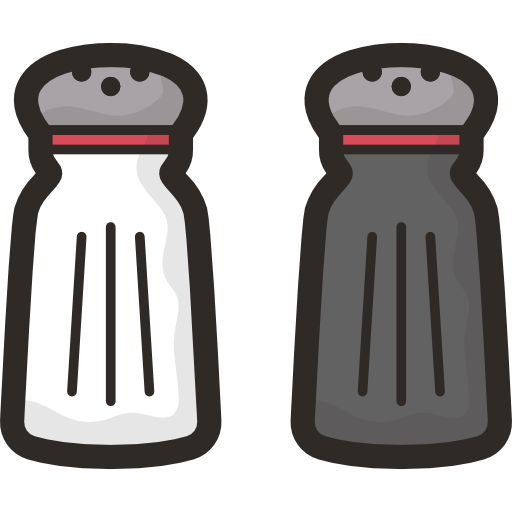

Receta de huevo con jamón
El huevo con jamón es un desayuno clásico y delicioso que combina la suavidad de los huevos revueltos con el sabor salado del jamón. Es fácil de preparar y perfecto para comenzar el día con energía.
Tiempo de preparación: 10 minutos
Ingredientes:
- 2 huevos
- 2 rebanadas de jamón

- Sal al gusto

- Pimienta al gusto
- 1 cucharada de aceite o mantequilla
Instrucciones:
- Calienta el aceite o la mantequilla en una sartén a fuego medio.
- Corta las rebanadas de jamón en trozos pequeños y agrégalas a la sartén. Cocina hasta que estén ligeramente doradas.
- En un bol, bate los huevos con una pizca de sal y pimienta.
- Vierte los huevos batidos en la sartén con el jamón. Cocina, revolviendo ocasionalmente, hasta que los huevos estén cocidos a tu gusto.
- Sirve caliente y disfruta de tu huevo con jamón.